Tutta la partita ufficiale con l'eScoresheet OpenVolley, dalla prima apertura al referto finale: un tablet in orizzontale al tavolo del segnapunti, una partita di un campionato svizzero. Le squadre e le persone nelle immagini sono inventate.
1
Prima apertura: Svizzera o Globale
La prima volta l'app chiede «Come usi OpenVolley?». Scegli «Svizzera» per le partite dei campionati svizzeri: accesso, lista delle partite, Einsatzliste, roster della società e cloud.
«Globale» è per qualsiasi torneo o amichevole: senza accesso, partite e roster da Excel. Puoi cambiarlo più tardi in «Opzioni», finché sul dispositivo non c'è nessuna partita.
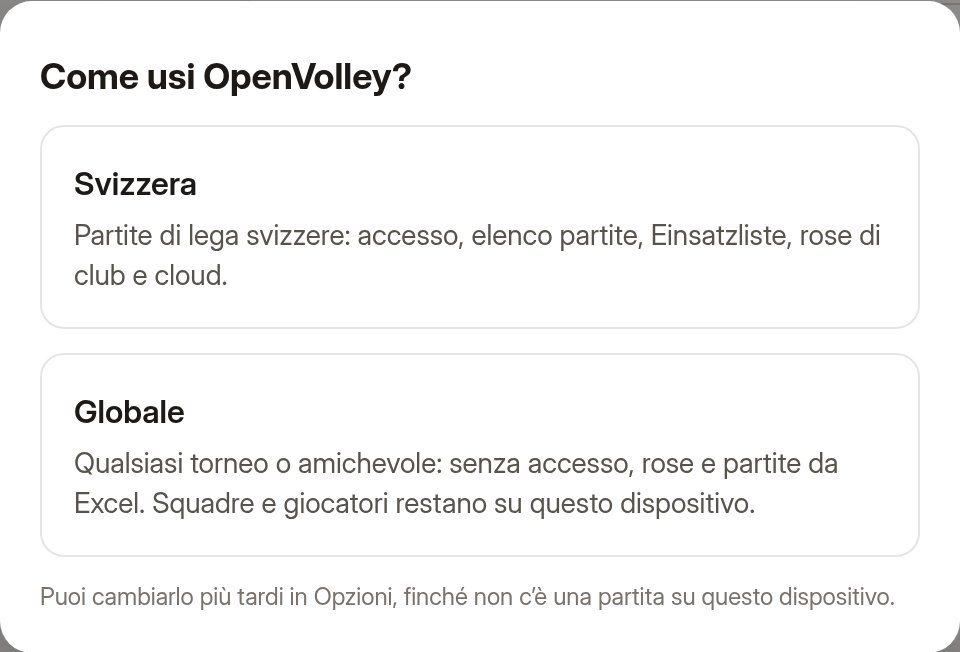
2
Home
Ogni partita inizia dalla home. Accedi con il tuo account OpenVolley (menu ☰), poi tocca «Partita ufficiale»: elenca le partite in casa di oggi del tuo club.
«Partita test» serve per esercitarsi e non viene mai salvata sul server, «Partita semplice» non è ufficiale (niente roster, niente firme), «Tabellone» mostra solo punti e set. «Continua partita» ti riporta alla partita su questo dispositivo.
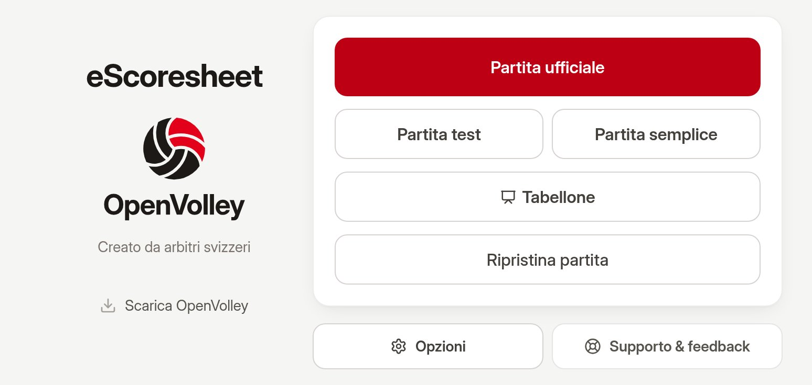
3
Caricare la partita dal calendario
La tua partita non è nella lista? Tocca «Inserisci tu la partita», poi «Carica partita dal calendario». Scegli genere e campionato, poi la tua partita.
L'app inserisce numero partita, squadre, data, ora, palestra e arbitri. Serve una connessione internet.
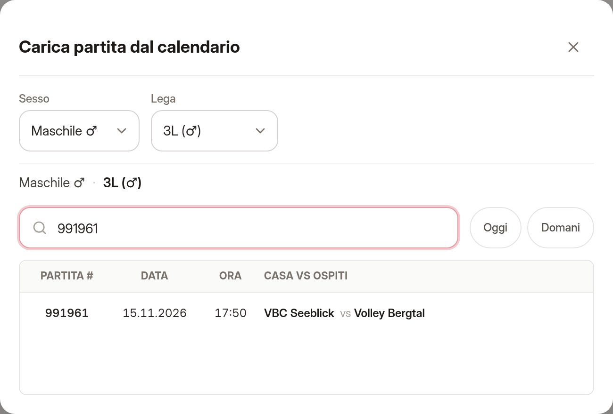
Per i segnapunti · eScoresheet 3.2.5
4
Info partita e ufficiali di gara
Controlla la pagina e completa ciò che il calendario non ha, per esempio la data di nascita del segnapunti e i nomi brevi delle squadre, poi tocca «Crea partita». Con l'accesso, il segnapunti sei tu. Servono il 1° arbitro e il segnapunti; il 2° arbitro, l'assistente segnapunti e i giudici di linea sono facoltativi. Ogni arbitro e ogni squadra può avere un indirizzo e-mail per il referto finale.
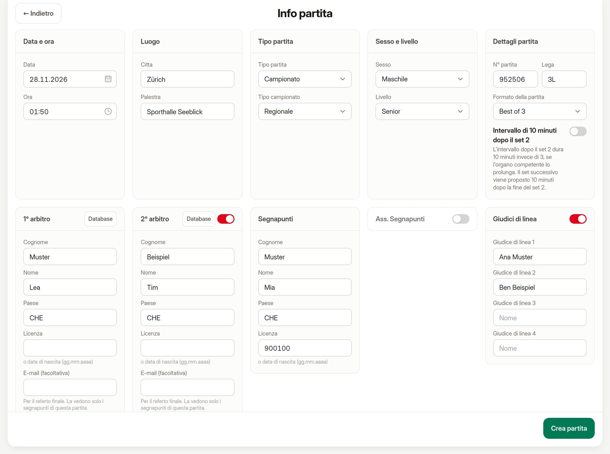
5
Roster
Tocca «Modifica roster» per ogni squadra. Scrivi i giocatori, oppure tocca «Carica PDF» e scegli il PDF del roster della squadra o l'Einsatzliste. Segna il capitano (C) e al massimo due liberi, controlla numeri e date di nascita, aggiungi gli ufficiali della panchina, poi tocca «Conferma».
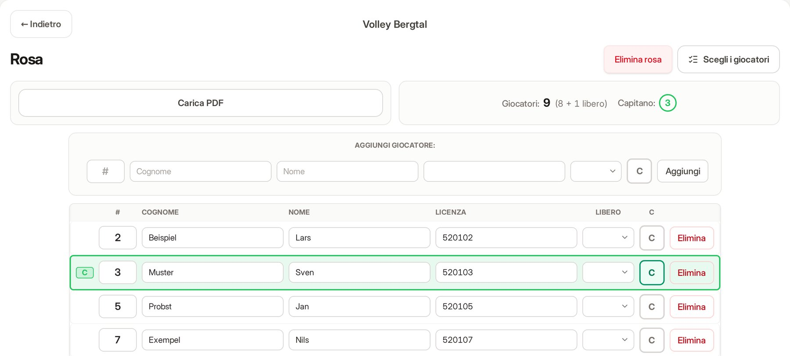
Per i segnapunti · eScoresheet 3.2.5
6
Un elenco inviato in anticipo
Un responsabile della squadra può inviare in anticipo l'elenco della partita su manager.openvolley.app. La scheda della squadra mostra allora «Elenco inviato da …»: «Mostra» per guardarlo, «Accetta» per caricarlo, «Non ora» per lasciarlo per dopo.
Controllalo con l'allenatore. Se l'allenatore e il capitano hanno firmato in anticipo, le loro firme arrivano insieme.
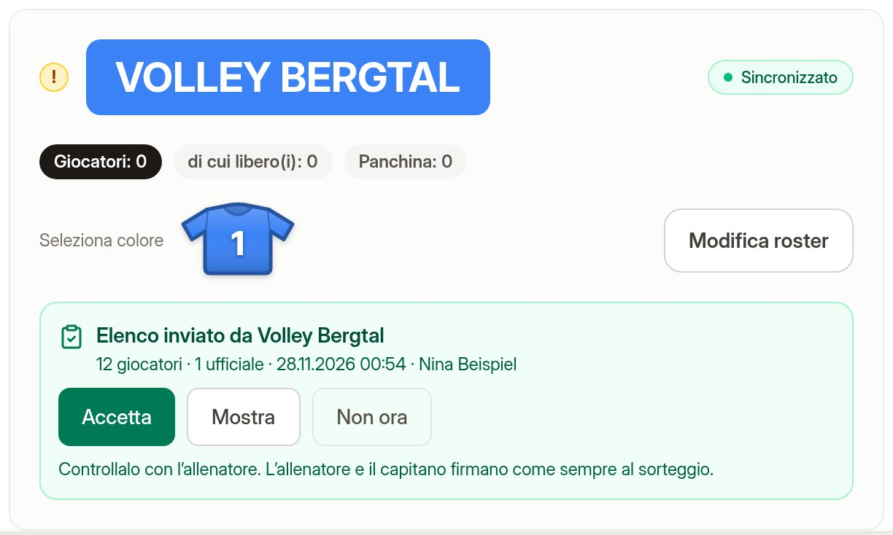
7
Backup e PIN partita
«Backup», in cima alla configurazione della partita, mostra dove è salvata questa partita: nel cloud mentre referti con l'accesso, su questo dispositivo (in Chrome o Edge con «Seleziona cartella backup») e, con l'app desktop, su una chiavetta USB. Conserva il PIN partita, che trovi nella pagina info partita e sulla home: ti serve per eliminare, ripristinare o continuare la partita su un altro dispositivo.
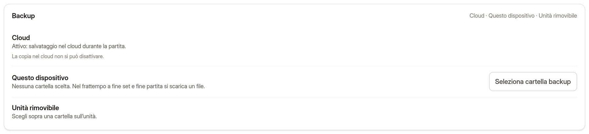
8
Sorteggio e firme
Tocca «Sorteggio». Imposta lati e primo servizio con «Inverti squadre» e «Inverti servizio», poi tocca «Conferma il sorteggio».
Il capitano e l'allenatore di ogni squadra firmano: «Firma A» o «Firma B», poi «Capitano» o «Coach», sullo schermo o con «Firma sul telefono». Possono anche firmare più tardi, durante il riscaldamento.
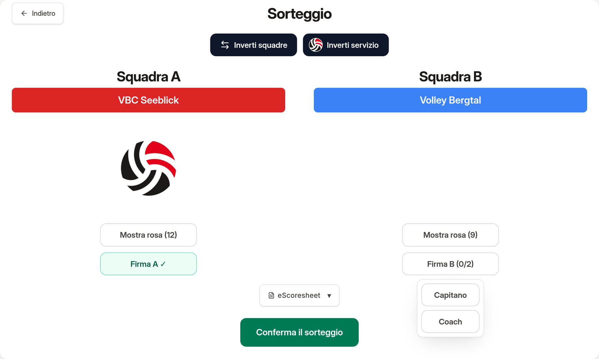
Per i segnapunti · eScoresheet 3.2.5
9
Formazioni
Tocca «Formazione» dal lato di ogni squadra, inserisci le posizioni da I a VI e tocca «Confermare». La prima formazione resta coperta («Formazione stabilita») finché non è inserita quella dell'altra squadra. Un «Firme mancanti» lampeggiante vuol dire che una squadra non ha ancora firmato: toccalo e firmano lì. Il set 1 inizia solo quando tutti e quattro hanno firmato.
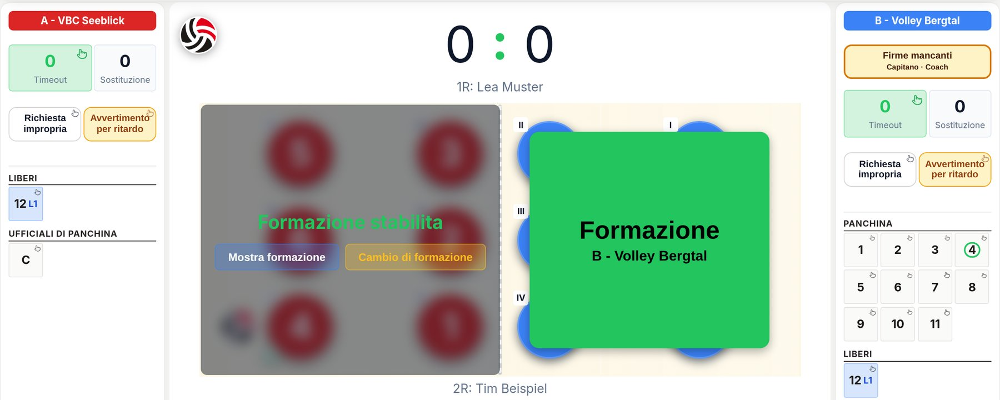
10
Scambi
Tocca «Inizia scambio» prima di ogni servizio, poi il pulsante punto della squadra che ha vinto lo scambio («Punto A» o «Punto B»). La casella «SERVIZIO» mostra il numero di chi serve, e l'app fa ruotare una squadra quando riconquista il servizio. Durante uno scambio, «Ripeti scambio» lo fa ripetere.
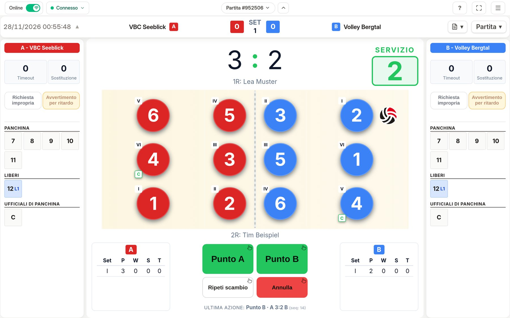
Per i segnapunti · eScoresheet 3.2.5
11
Annulla e cambio decisione
«Annulla» toglie l'ultimo punto. Dopo un punto, «Cambio decisione» lo assegna all'altra squadra («Assegna all'altra squadra») o fa ripetere lo scambio («Ripeti lo scambio»); la finestra mostra il nuovo punteggio e chi serve.
Quando gli arbitri riportano indietro una parte del set, usa Partita › «Tornare indietro». Tutto il resto passa da Partita › «Correzioni».
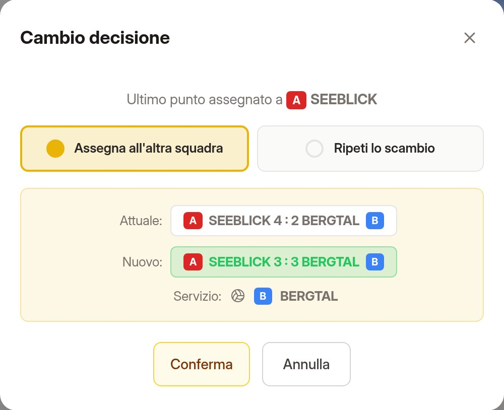
12
Timeout, sostituzioni, liberi, sanzioni
Timeout: tra due scambi, tocca la casella «TO» della squadra, poi «Conferma timeout» (30 secondi).
Sostituzione: tocca il giocatore in campo, «Sostituzione», poi il giocatore che entra.
Libero: tocca un giocatore della seconda linea, poi «Libero».
Sanzione: tocca il giocatore, poi «Sanzione». Per la squadra, «Richiesta impropria» e «Avvertimento per ritardo» sono sotto le sue caselle.
L'app controlla le regole man mano e chiede prima di registrare qualcosa di insolito.
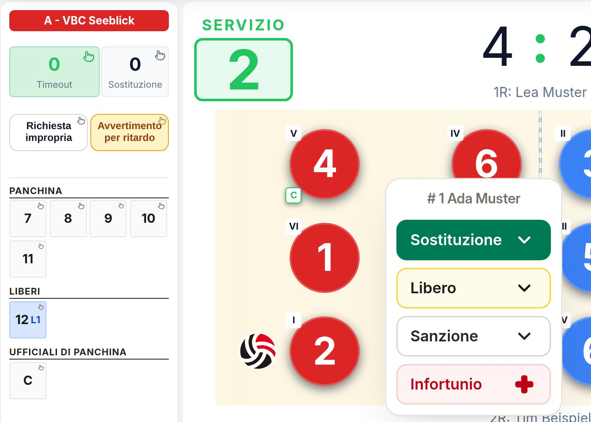
13
Richieste della panchina
Con un tablet della panchina, l'allenatore può chiedere un timeout o una sostituzione, o inviare la formazione. In alto a destra compare allora una scheda.
«Concedi il time-out» o «Sostituisci» apre la solita finestra, «Controlla e accetta» la formazione, e «Rifiuta» chiede un motivo che la panchina vede. La concessione aspetta mentre uno scambio è in gioco.
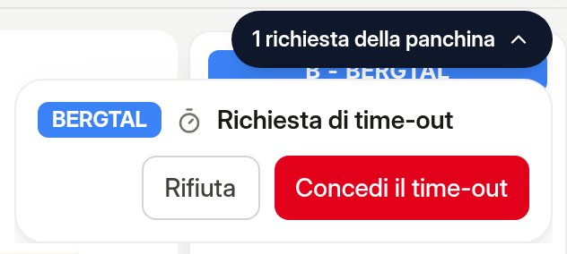
Per i segnapunti · eScoresheet 3.2.5
14
Fine del set
A 25 punti con due punti di vantaggio l'app chiude il set: controlla il punteggio e l'ora di fine, poi tocca «Conferma». Se l'ultimo punto era sbagliato, c'è ancora «Cambio decisione».
Poi inizia l'intervallo tra i set, con il suo conto alla rovescia.
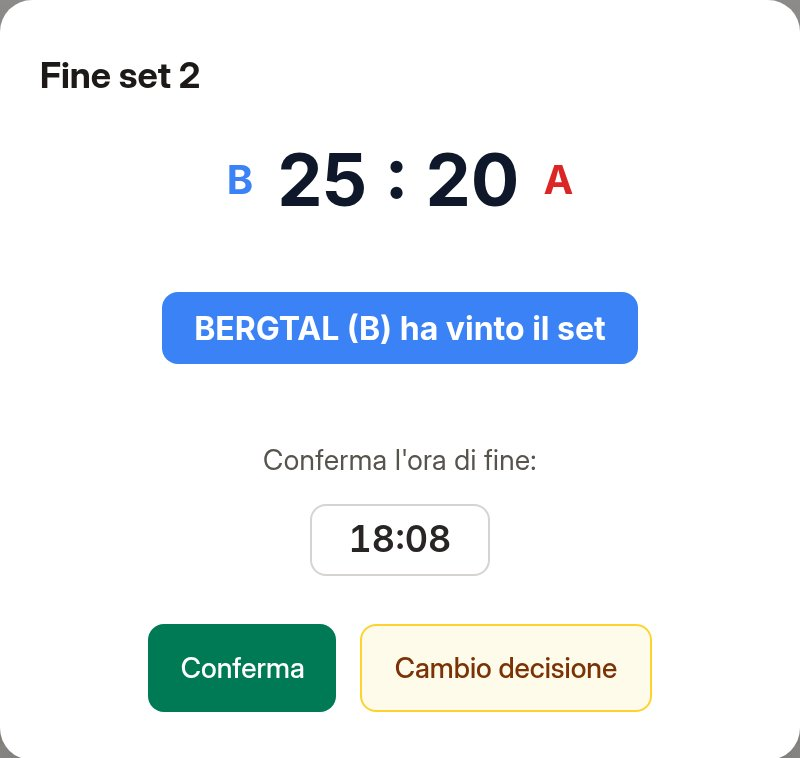
15
Set decisivo
Prima del set decisivo (set 3 al meglio dei 3, set 5 al meglio dei 5) l'app chiede un nuovo sorteggio: «Inverti lati» e «Inverti servizio», poi «Conferma set 3».
Il set decisivo va a 15 punti; a 8 punti le squadre cambiano campo.
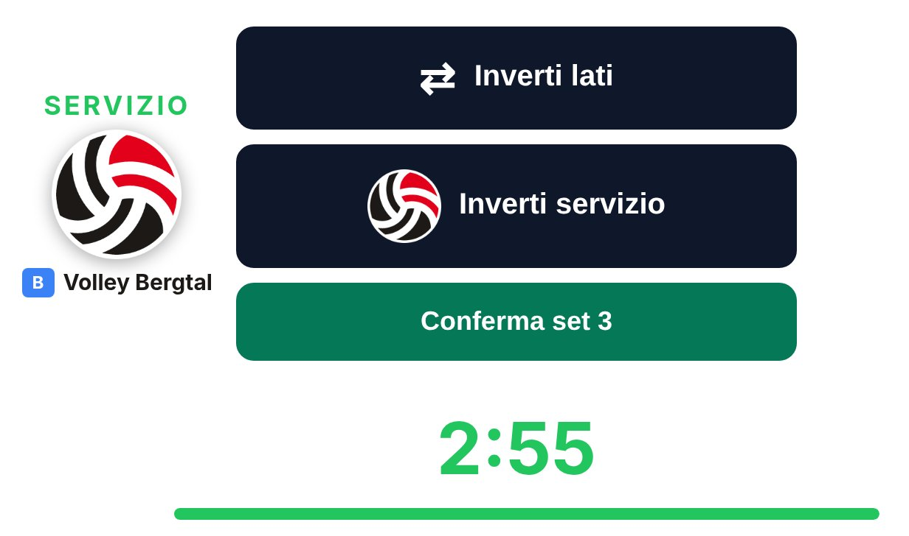
16
Fine della partita
Controlla i risultati e raccogli le firme: prima i capitani, poi gli ufficiali di gara (vanno anche «Firma sul telefono» e «Approva con PIN»). Poi tocca «Conferma e approva»: l'app scarica uno ZIP con i dati della partita e il referto in PDF e chiude la partita sul server. Dove la lega invia i referti finali, il PDF viene spedito per e-mail al segnapunti, agli arbitri e ai contatti delle squadre.
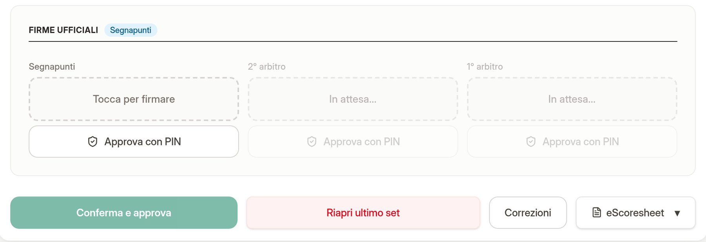
Per i segnapunti · eScoresheet 3.2.5
17
Tablet in palestra
Nel menu (☰), tocca «Collega tablet». Scegli come si collegano i tablet, attiva ogni tablet e fagli scansionare il suo codice. I tablet dell'arbitro e delle panchine hanno bisogno del loro PIN; il livescore no. Il chip nell'intestazione (per esempio 1/3) mostra quanti tablet sono collegati.
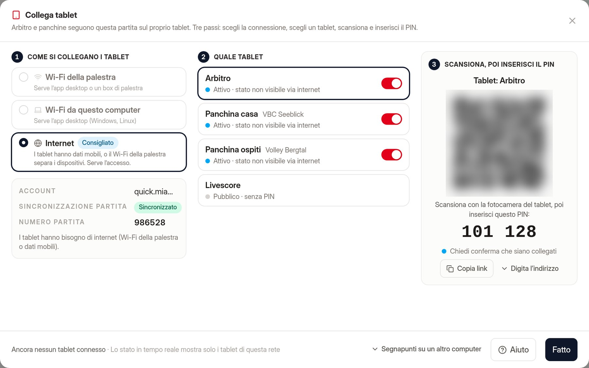
18
Offline, backup e un altro dispositivo
Refertare non richiede mai internet: ogni modifica viene salvata prima su questo dispositivo e inviata quando la connessione torna. L'intestazione mostra lo stato, per esempio «Connesso» o «Offline (3 in attesa)».
Per continuare su un altro dispositivo: sulla home, «Ripristina partita», inserisci il numero partita e il PIN partita, «Cerca backup cloud», poi «Conferma ripristino». Il vecchio dispositivo smette di refertare. Va anche un file di backup («Seleziona file di backup»).
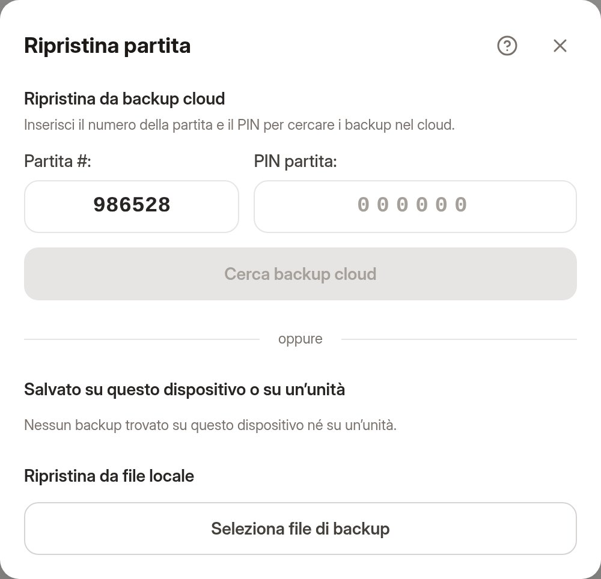
?
Altro aiuto
Ogni schermata ha un ? nell'intestazione: l'aiuto di quella schermata, con un breve video e «Mostrami». Lo stesso aiuto, in tedesco, inglese, francese e italiano, è su openvolley.app/support.